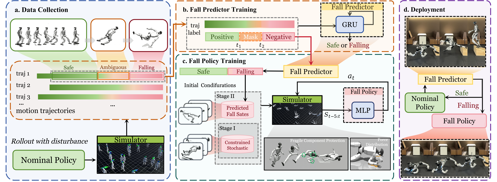

Bipedal locomotion makes humanoid robots inherently prone to falls, causing catastrophic damage to the expensive sensors, actuators, and structural components of full-scale robots. To address this critical barrier to real-world deployment, we present SafeFall, a framework that learns to predict imminent, unavoidable falls and execute protective maneuvers to minimize hardware damage. SafeFall is designed to operate seamlessly alongside any existing nominal controller, ensuring no interference during normal operation. It combines two synergistic components: a lightweight, GRU-based fall predictor that continuously monitors the robot's state, and a reinforcement learning policy for mitigation.

SafeFall combines a lightweight GRU-based fall predictor with a damage-aware reinforcement learning policy that executes protective maneuvers when a fall is predicted to be unavoidable. The predictor continuously monitors the robot state and, upon detection, the mitigation policy activates to minimize hardware damage by shielding vulnerable components while distributing impact to more robust ones.
We simulate various fall-inducing scenarios in the simulation to collect data, which is subsequently used to train the fall predictor and initialize the starting poses for the SafeFall policy.
Sensor Noise
System Delay
Foot Slip
Foot Trip
The fall predictor yields no false positives for disturbances that fall within the controllable range of the nominal policy.
Long-duration walking
Push but recovery
Drag but recovery
The SafeFall policy is capable of handling omnidirectional falls.
Forward fall
Lateral fall
Backward fall
The SafeFall policy maintains its protective capabilities even in more challenging scenarios.
Forward fall off the step
Falling while running at 1m/s
Falling while running at 2m/s
Falling while running at 3m/s
Citation
@article{meng2026safefall,
title = {SafeFall: Learning Protective Control for Humanoid Robots},
author = {Ziyu Meng and Tengyu Liu and Le Ma and Yingying Wu and Ran Song and Wei Zhang and Siyuan Huang},
journal = {arXiv preprint},
year = {2026}
}